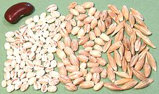
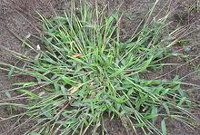
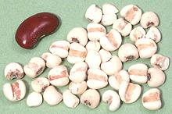
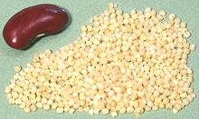
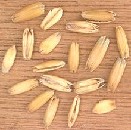
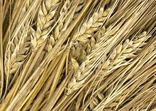
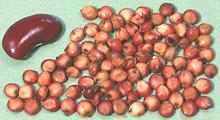
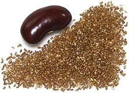
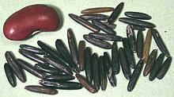

SAFARI
Users
- Grains
- Crabgrass / Fonio
- Job's Tears
- Millets
- Oats
- Rye
- Sorghum
- Teff
- Wild Rice
- Wheat Genus - Ajar, Spelt, Emmer / Farro, Einkorn, Korasan / KAMUT.
- "Grains" that aren't Grasses
- Health & Nutrition
Grains
Wheat - Genus Triticum:
These grains are described on our Wheat page.
- Adjar
- Einkorn
- Emmer / Farro
- Korasan / KAMUT
- Spelt
Barley
 [Damai (China); Hordeum vulgare]
Barley was first domesticated in the Near East with the earliest find being in Syria dated to around 7000 BCE. Beer has been made from it since about then. It has been grown in Korea from around 1400 BCE. Tibet started growing barley around 450 CE. Made into a flour product called tsampa it is still an important staple in that region.
Barley comes in two varieties, two row and six row. The six row is
higher in protein and used primarily as animal feed. The two row is
higher in sugar and is used more for human consumption. Note that barley
does contain the protein gluten, not enough to make leavened bread, but
enough to harm a person with Celiac Disorder.
Details and Cooking.
Crabgrass
 [Genus Digitaria of subfamily Panicoideae]
These annual grasses have been grown for thousands of years, both
for the tiny grains for human consumption, and the grass itself for
animal fodder.These grasses are highly nutritious with a high protein
content, but contain no gluten. They are also considered a very good
grazing crop. Today, they are most important in Africa. Examples are
Fonio, Large Crabgrass, and Raishan. For details
see our Crabgrass page.
Job's Tears
 [Coix, Coixseed, Adlay, Adlal; Hot bo bo (Viet); Yuuki hatomugi (Japan); Coix lacryma-jobi var. ma-yuen | Rosary beads: Coix lacryma-jobi var. lacryma-jobi ]
Two varieties of the is tropical grass are grown, one as a grain and
the other for hard shelled beads. While native to Southeast Asia and grown
there in mountainous regions, this plant is now also grown in the southern
United States and in the tropical Americas. It is usually pearled except
in Japan where it is used "brown". This grain is used in soups and to make
teas and beverages, including distilled alcoholic beverages. In the Asian
markets here in Los Angeles, and I presume elsewhere in North America, it
is always packaged as "Pearl Barley", though it is easily recognized from
its large size and deep groove on one side. Job's Tears are gluten free.
Details and Cooking.
Millets
 [family Poaceae subfamily Panicoideae except finger millet subfamily Chloridoideae]
Millets were the original grains of China, cultivated since at least 5000 BCE and long predating rice cultivation. I use the plural because millet is not a single taxonomic group, but an agricultural grouping of similar small seeded grasses, some related only at the family level. The earliest preserved examples of noodles (2000 BCE) were made from two kinds of millet. All millets are high in protein, but contain no gluten. This important and diverse family now has its own Millets page.
Oats
 [Avena sativa]
This grain originated in northern Mesopotamia, but the first evidence of domestication is from Europe from around 2000 BCE. It is grown in temperate zones in both the Old and New Worlds in regions where the summers are too wet and cool for other grains, but it is almost unknown in Asia.
Oats have not been held in high esteem by some populations but are considered very important in Scotland. Samusl Johnson wrote in his dictionary, "Oats: a grain, which in England is generally given to horses, but in Scotland supports the people". The Scots replied that "Consequently England has the finest horses, and Scotland has the finest men". Actually many of the less fortunate in England also survived on oats.
In North America oats are known almost entirely for Rolled Oats as a hot breakfast cereal, and for oatmeal cookies made from the same product. A less known but very fine use of oats is in the brewing of beer, particularly oatmeal stout.
Oats are controversial for use in a gluten free diet, though they
may (or may not) be safe, in North America they are almost always
contaminated with wheat so are not safe. Oats and particularly oat bran
are currently being promoted as capable of lowering blood cholesterol.
The photo shows oat grains still in the husks, the way they would be
served to horses. Photo by Rasbak distributed under license
Creative Commons
Attribution-Share Alike v3.0.
Rye
 [Secale cereale]
This grain was first domesticated in eastern Turkey and is still grown there as a relatively minor crop. Rye is able to grow in climates so cold other grain crops fail, so has been most heavily grown in the northern reaches of Europe, including Scandinavia and Russia.
Rye is well known in North America for the flour used to make Rye Bread, though that bread is commonly as much wheat as rye because rye has less gluten and does not rise as well. This can be somewhat corrected by an acidic dough, for which reason sourdough rye is so much made. By this means quite edible bread of only rye flour can be made. Rye crisp crackers are also very well known and popular. Another popular use for rye is in the making of rye whisky.
Rye is still grown widely in Central and Eastern Europe where it has long been the main bread grain, particularly in Finland, Latvia and Lithuania. Its production is, however, in decline as imported wheat has become increasingly available. Russia, Poland and Germany are the major producers.
Rye is, of course, not safe for celiacs, having a fairly substantial
gluten content. It's other health problem, affecting both horses and humans,
is vulnerability to ergot fungus which is seriously toxic. Ergot poisoning
affects not only the body but the mind, causing convulsions and hallucinations.
In the past ergot infections have coincided with a rise in witchcraft trials,
in both Europe and North America.
Photo by U.S. Federal Government = public domain.
Sorghum
 [Milo, Broom Straw, Egyptian Millet, Sudan Grass, Feterita, Shallu, Kaffir Corn, Guinea Corn; Durra (Arabic); Jola, Jowari, Jawari, Juwar (India); Gao-liang, Shushu (China); Sorghum bicolor]
The first evidence of cultivated sorghum comes from India and Pakistan
from earlier than 1000 BCE - but it is not native there. It must have
been cultivated in sub-Saharan Africa some time before that. Modern
cultivars appear to have been developed in East Africa about 2000 years
ago, but exactly where has not been determined. It is not as nutritious as
wheat or millet, but contains no gluten and tolerates dry regions. It is
still grown as a food crop over much of the world.
Details and Cooking.
Teff
 [Eragrostis tef]
Domesticated Teff has been harvested in Ethiopia for between 3000 and
6000 years, and is now a minor crop in India and Australia. It is
increasingly grown in the western United States as a productive and very
nutritious animal forage crop, alternating with alfalfa in the fields.
This has made it more available for other uses as well. Ethiopia had a
long standing ban on exporting Teff to keep it affordable, but
improvement in agricultural practices allowed that ban to be lifted in
2015. It is used to make Injera, the regional bread of Ethiopia and
Eritrea. Teff contains no gluten. Caution: seeds of a mustard
plant called London Rocket are often
erroneously labeled "Teff". That seed is used in beverages in Iran.
Details and Cooking.
Wild Rice
 [Zizania palustris, Zizania aquatica]
I'm tired of reading that "Wild Rice is not actually rice but the seed
of an annual grass". Well what in hades do they think regular rice is?
Sheesh! give me a break! Anyway, you'll find wild rice over on the
Rice Page.
"Grains" that aren't Grasses
Amaranth
This is not a grain but the seed of an herb related to spinach. It has a high yield and easily harvested so its tiny seeds are used as if they were grain. Unlike grasses, the leaves are edible and widely used for food. Amaranth contains no gluten. For details see our Amaranth page.
Buckwheat
This is not a grain but the seed of a plant related to rhubarb. It is highly productive, particularly good in colder climates and is used as if it were a grain. Buckwheat contains no gluten. For details see our Buckwheat page.
Quinoa
Quinoa (pronounced keen-wah), is not a grain but the seed of an herb related to Epazote and common Goosefoot. It is high yield and easily harvested so its tiny seeds are used as if they were grain. Quinoa contains no gluten. For details see our Quinoa page.